Museums & Buildings
Handmade ceramic decorations created for museums, galleries, historic houses and cultural venues. Each design is crafted to capture the character of its building.
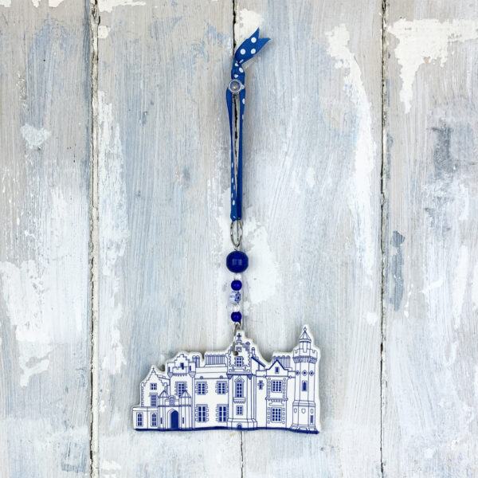
Abbotsford House

Arley Hall
Bath Roman Baths
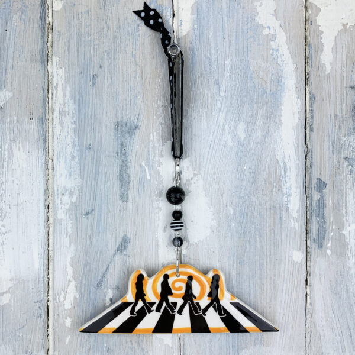
Beatles Abbey Road
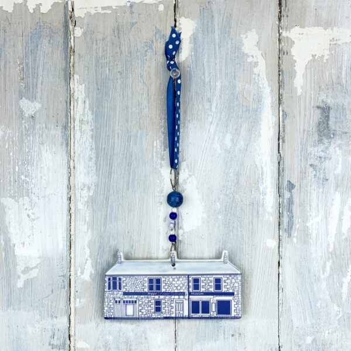
Biggar Museum
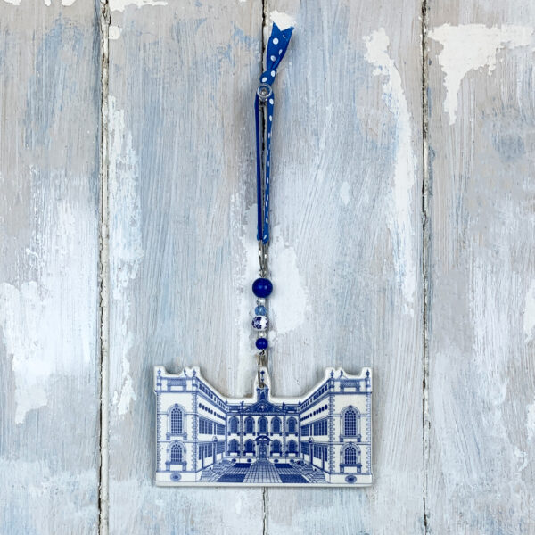
Bluecoat, Liverpool
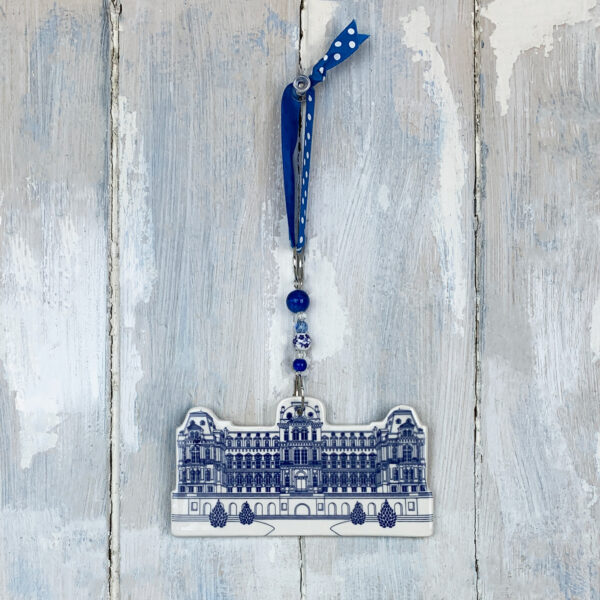
Bowes Museum
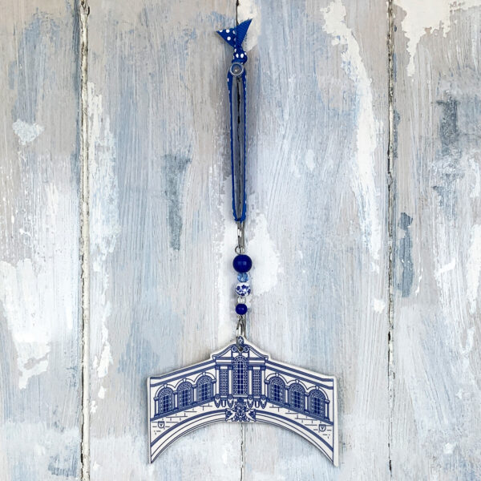
Bridge of Sighs, Oxford
Court Barn
Cromarty Courthouse Museum
Divinity School, Oxford
Doddington Hall
Gawthorpe Hall
Glyndebourne Opera House
Het Scheepvaartmuseum, Amsterdam
Kasteel Amerongen
Kasteel de Haar
Kelmscott Manor
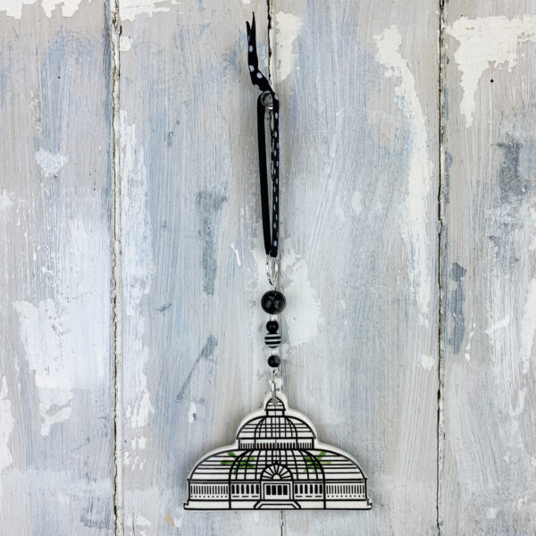
Kew Botanic Gardens Palm House
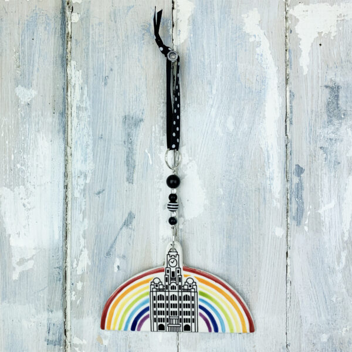
Liverpool Liver Building with Rainbow
Liverpool Sefton Park Palm House
McEwan Hall, Edinburgh
MG Abingdon A Block
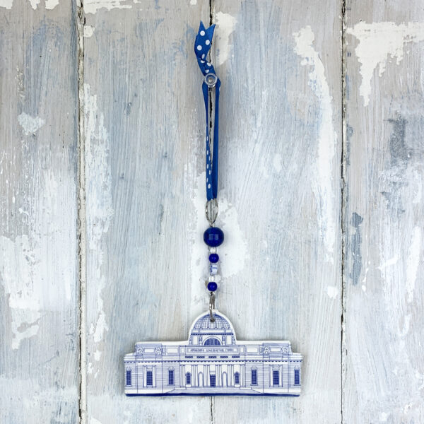
National Museum Cardiff
New College, Edinburgh
Newbury Cloth Hall
Old College, Edinburgh
Old Royal Naval College
Ordsall Hall
Oxford Botanic Garden
Oxford Christ Church Tom Tower
Oxford University Museum of Natural History
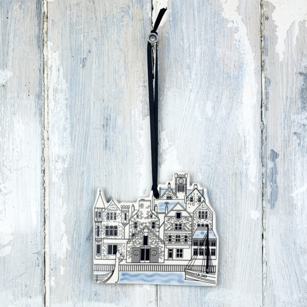
Peerie Shop, Lerwick
Perth Art Gallery
Perth Museum
Radcliffe Camera
Reading Town Hall and Museum
Richmond Theatre
Royal Opera House
Salford Museum and Art Gallery
Shaw House
Sheldonian Theatre
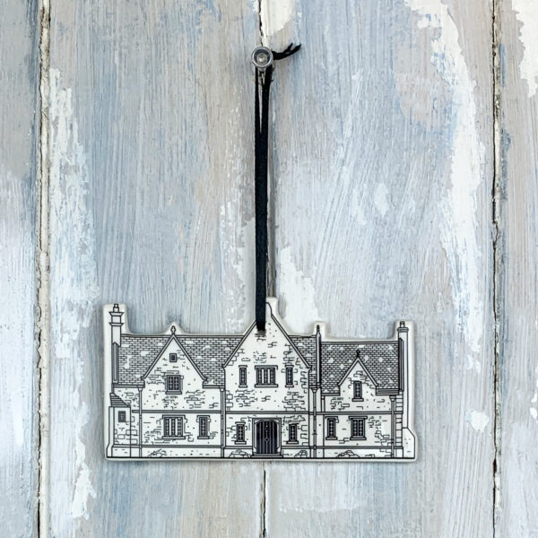
Skyfall
Teviot Row House, Edinburgh
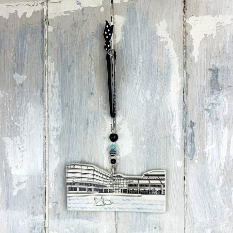
The National Archives
Titchfield Market Hall
University of St Andrews
Pump Street Chocolate
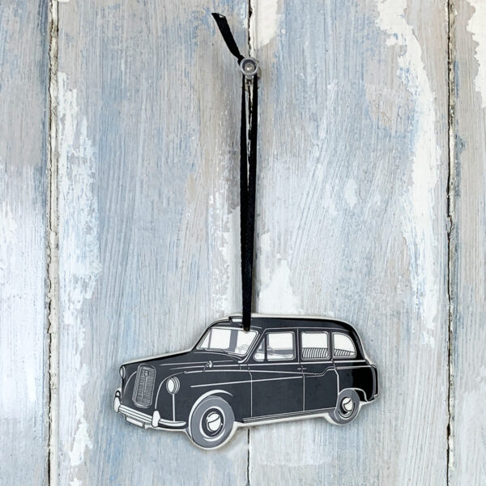
Black Taxi
Liverpool Liver Building (Black)